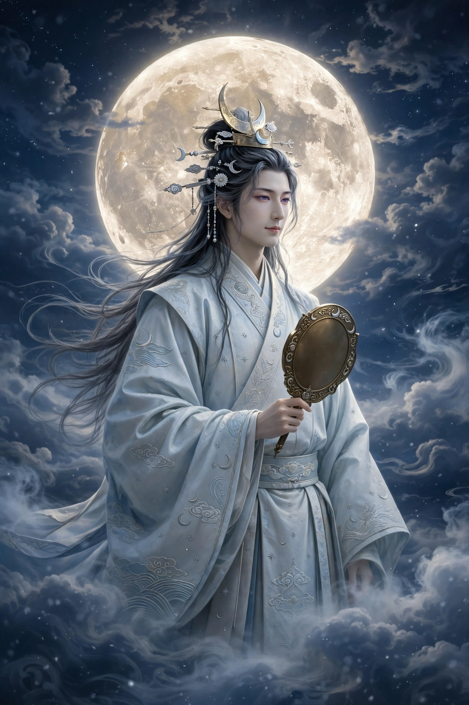

From Wikipedia, the free encyclopedia
| Tsukuyomi-no-Mikoto | |
|---|---|
| Affiliation | Shinto; kami of the moon and night |
| Born | From Izanagi's right eye (Kojiki account) |
| Siblings | Amaterasu, Susanoo |
| Realm | The night sky |
| Notable myth | The slaying of the food goddess Uke Mochi |

Tsukuyomi (Japanese: 月読命, Tsukuyomi-no-Mikoto, also Tsukiyomi) is the Shinto kami of the moon, one of the "three precious children" born to Izanagi in his purification after Yomi: from Izanagi's left eye came Amaterasu, the sun; from his right eye, Tsukuyomi, to rule the night; from his nose, Susanoo, the sea. Of the three, Tsukuyomi is by far the least storied — almost a presence rather than a character — yet as the moon that governs the calendar, the tides and the night, his quiet office orders Japanese time itself: his name is traditionally read as "moon-reading", the counting of the moons.
Tsukuyomi's one famous act is a disaster of etiquette. Sent by Amaterasu to visit Uke Mochi, goddess of food, he watched her produce a feast by vomiting and excreting the foods — in the Nihon Shoki version, from her mouth, nose and rectum — and, in disgust at the pollution of the meal, killed her. Amaterasu, furious, declared she would never look on him again: which is why, the myth says, the sun and moon never meet — day and night are separated by a goddess's disgust at her brother's violence. From Uke Mochi's corpse, in the same telling, sprang the grains, the beans and the silkworm: death feeding the world.
Tsukuyomi has few independent shrines — a notable one is Tsukiyomi-jinja in Kyoto's Matsuo shrine complex — and appears more often as an honoured guest in other gods' shrines and in the imperial cult of Ise's orbit. Folklore connects him with moon-viewing (tsukimi), the harvest moon, and the lunisolar calendar by which festivals were set. In modern popular culture the name is best known from manga and games — the infinite dream-world technique "Tsukuyomi" in Naruto among them — where the silent moon god loans his name to illusion itself.
Shinto · Amaterasu · Susanoo · Izanagi · Japanese mythology · Kami